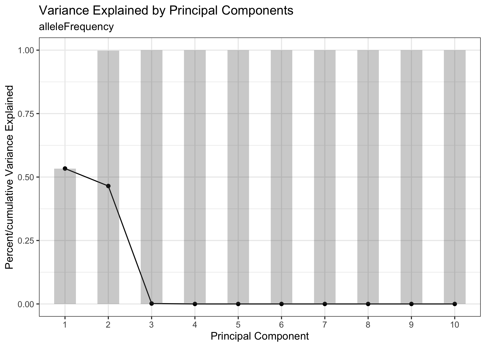
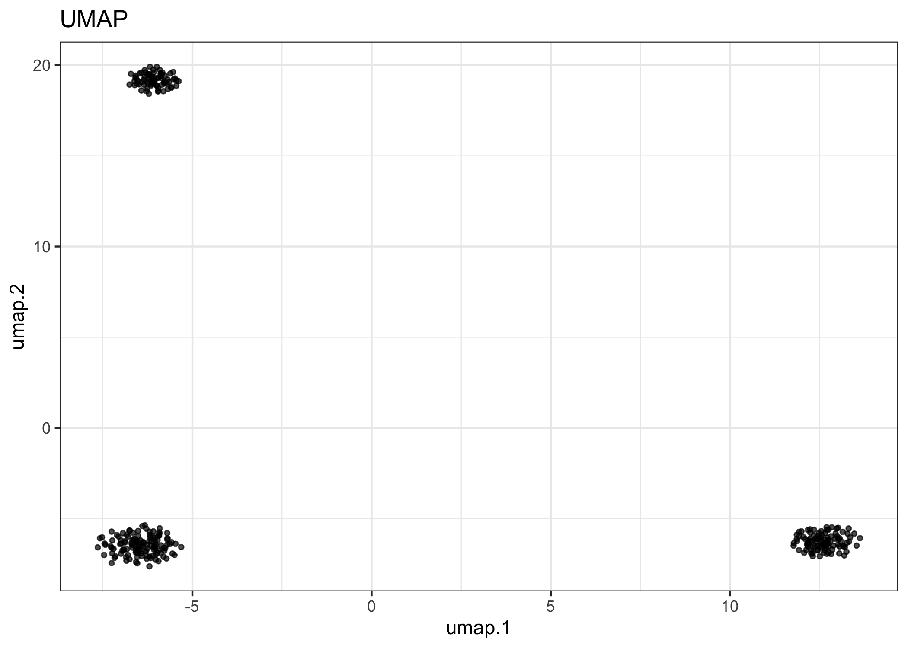
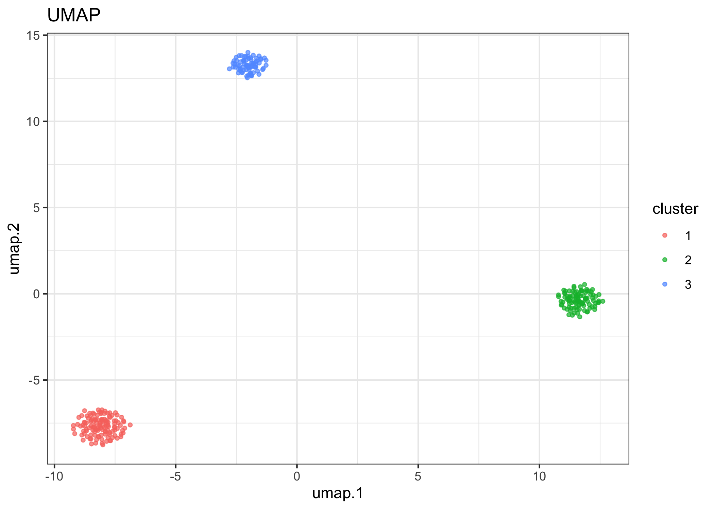
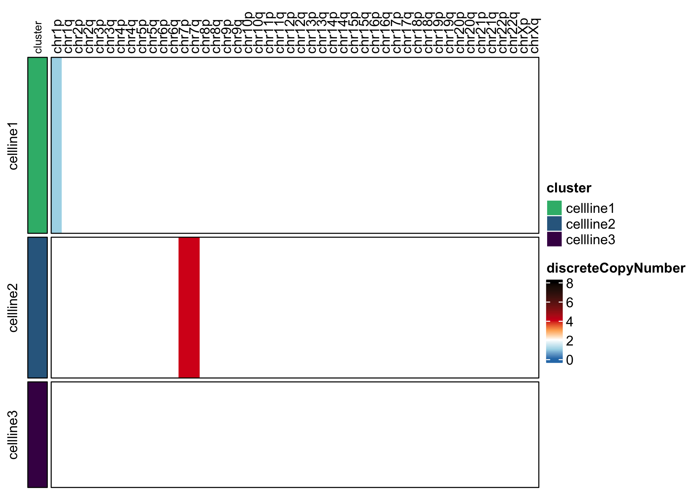
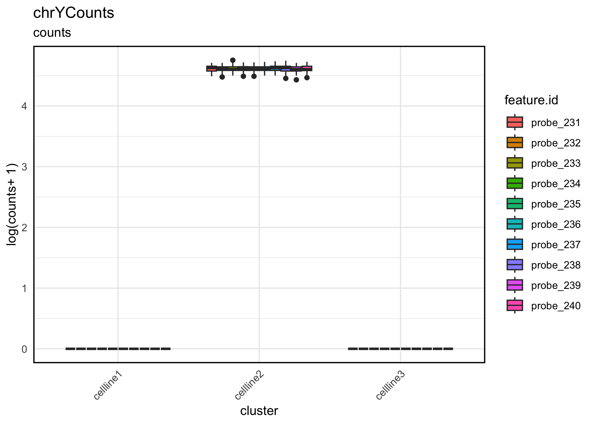

karyotapR enables analysis of DNA copy number (aneuploidy) using custom genome-wide targeted DNA sequencing panels for the Mission Bio Tapestri system.
Installation
You can install the current stable version of karyotapR from CRAN with:
install.packages('karyotapR')You can install the development version of karyotapR from GitHub with:
# install.packages("devtools")
devtools::install_github("joeymays/karyotapR")Basic Usage
Data Import
In practice, the dataset is imported from the .h5 file that is generated by the Tapestri Pipeline.
## NOT RUN
example.exp <- createTapestriExperiment(h5.filename)We’ll use a toy dataset for this example.
example.exp <- newTapestriExperimentExample()
#> ℹ Moving gRNA probe to `altExp` slot "grnaCounts".
#> ℹ Moving barcode probe to `altExp` slot "barcodeCounts".
#> ℹ Moving chrY probe(s) probe_231, probe_232, probe_233, probe_234, probe_235, probe_236, probe_237, probe_238, probe_239, and probe_240 to `altExp` slot "chrYCounts".Calling the TapestriExperiment will print a summary of the contained data.
example.exp
#> class: TapestriExperiment
#> dim: 230 300
#> metadata(7): sample.name pipeline.panel.name ... date.h5.created
#> mean.reads.per.cell.per.probe
#> assays(1): counts
#> rownames(230): probe_1 probe_2 ... probe_229 probe_230
#> rowData names(7): probe.id chr ... total.reads median.reads
#> colnames(300): cell_1 cell_2 ... cell_299 cell_300
#> colData names(3): cell.barcode test.cluster total.reads
#> reducedDimNames(0):
#> mainExpName: CNV
#> altExpNames(2): chrYCounts alleleFrequency
#> barcodeProbe: dummyBCprobe
#> grnaProbe: dummyGRNAprobe
#> gmmParams(0):Clustering
We cluster on allele frequency to partition different cell lines represented in the experiment. First, run PCA and use the knee plot to identify the PCs accounting for the most variation in the dataset.
example.exp <- runPCA(example.exp)
PCAKneePlot(example.exp)
Run UMAP with the top PCs.
example.exp <- runUMAP(example.exp, pca.dims = 1:2)
#> ℹ Running UMAP on: alleleFrequency.
reducedDimPlot(example.exp, dim.reduction = "umap")
Run runClustering() to cluster with dbscan.
example.exp <- runClustering(example.exp, eps = 0.9)
#> ℹ Finding clusters in: alleleFrequency UMAPVisualize UMAP, using “cluster” label to color.
reducedDimPlot(example.exp, dim.reduction = "umap", group.label = "cluster")
Rename cluster labels by renaming the factor levels of “cluster”. The forcats package makes this easy.
colData(example.exp)$cluster <- forcats::fct_recode(colData(example.exp)$cluster, cellline1 = "1", cellline2 = "2", cellline3 = "3")Copy Number Calculation
Normalize counts and calculate copy number relative to cellline 3, which is diploid. control.copy.number gives the cluster label and copy number value to normalize each chromosome arm to.
example.exp <- calcNormCounts(example.exp)
control.copy.number <- generateControlCopyNumberTemplate(example.exp, sample.feature.label = "cellline3", copy.number = 2)
example.exp <- calcCopyNumber(example.exp, control.copy.number = control.copy.number, sample.feature = "cluster")
example.exp <- calcSmoothCopyNumber(example.exp)
#> ℹ Smoothing copy number by median...
#> ✔ Smoothing copy number by median... [1.3s]
#> Visualize copy number. Visualization reveals that cell line 1 has 1 copy of chromosome arm 1p, and cell line 2 has three copies of chromosome 7.
assayHeatmap(example.exp, assay = "copyNumber", split.col.by = "arm", split.row.by = "cluster", annotate.row.by = "cluster", color.preset = "copy.number")
assayHeatmap(example.exp, alt.exp = "smoothedCopyNumberByArm", assay = "discreteCopyNumber", split.row.by = "cluster", annotate.row.by = "cluster", color.preset = "copy.number")
Visualize chrY counts. Visualization reveals that cellline 2 has chr Y and is therefore male, while the other two cell lines are female.
assayBoxPlot(example.exp, alt.exp = "chrYCounts", split.features = TRUE, split.x.by = "cluster")